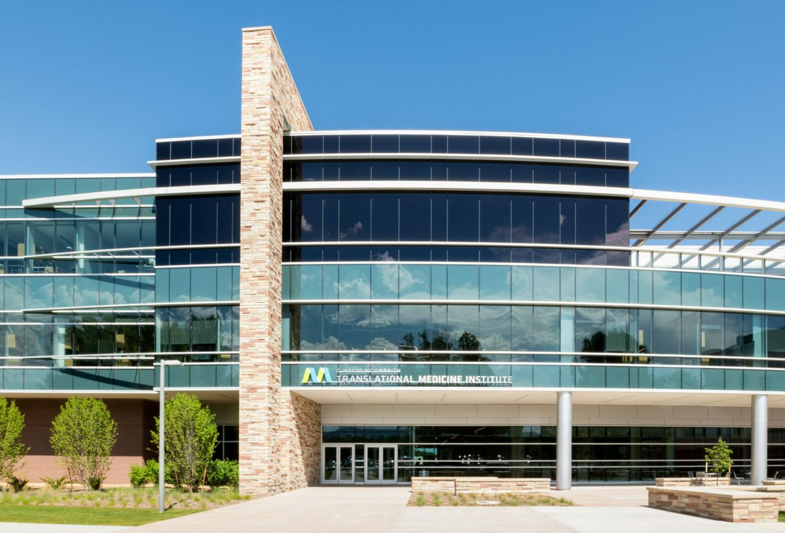
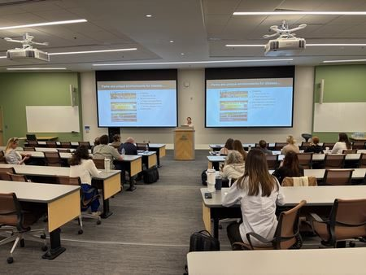
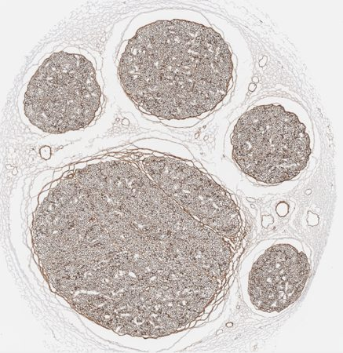
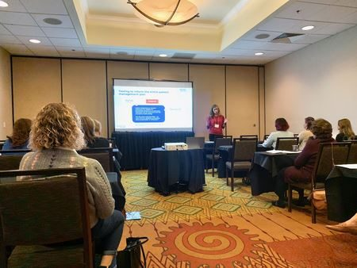

Registration is open
2026 CSH Fall Meeting
Friday and Saturday, November 13 and 14, 2026
Translational Medicine Institute, Colorado State University
2350 Gillette Dr., Fort Collins, CO 80523
Cultivating an atmosphere of learning and advancing the spectrum of histotechnology.

Registration is open
Friday and Saturday, November 13 and 14, 2026
Translational Medicine Institute, Colorado State University
2350 Gillette Dr., Fort Collins, CO 80523
CSH is a non-profit society that unites histologic technicians and technologists across Colorado. We promote the aims and ideals of histotechnology and higher standards in clinical methods and research.
The society began in 1980 with one lecture on special stains at the University of Colorado Health Sciences Center. We have met almost every year since.
Photo albums from CSH meetings and the Art in Science digital art competition.



CSH posts histology job openings and resumes in Colorado free of charge for up to 90 days.
Questions about membership, meetings or the website go to the officers and web manager.